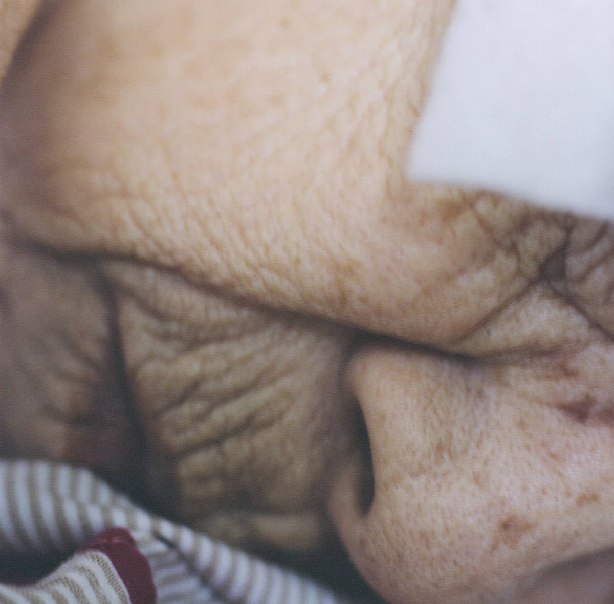
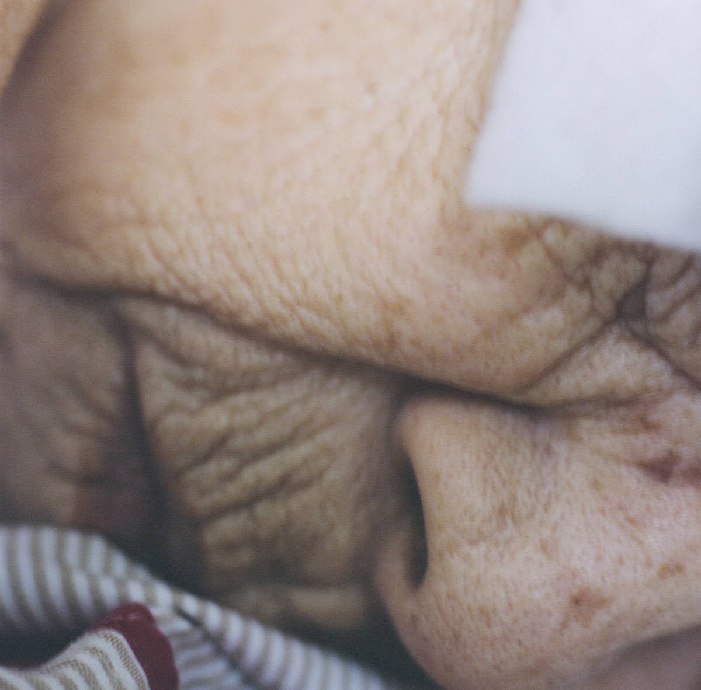

Information +
Edited, proofread and wrote pieces for photography fair and festival Unseen Photo Fair's first magazine.
Information +
As Editor-in-Chief, format and content strategy created on the theme of 'Japan: Individualism vs Community', with a strong focus on collaboration within art, fashion, religion and sociology.

 

Information +
A personal project about the intimacy between myself and my maternal Japanese grandmother during her last days.


Information +
Group graduation show at LCC London, guerrilla prints around Arles during Les Rencontres d'Arles 2015 and subsequent Skinship book designed by Ayumi Higuchi.
Information +
Portraits of Hans Kemna, Sohei Nishino and publisher Willem van Zoetendaal.